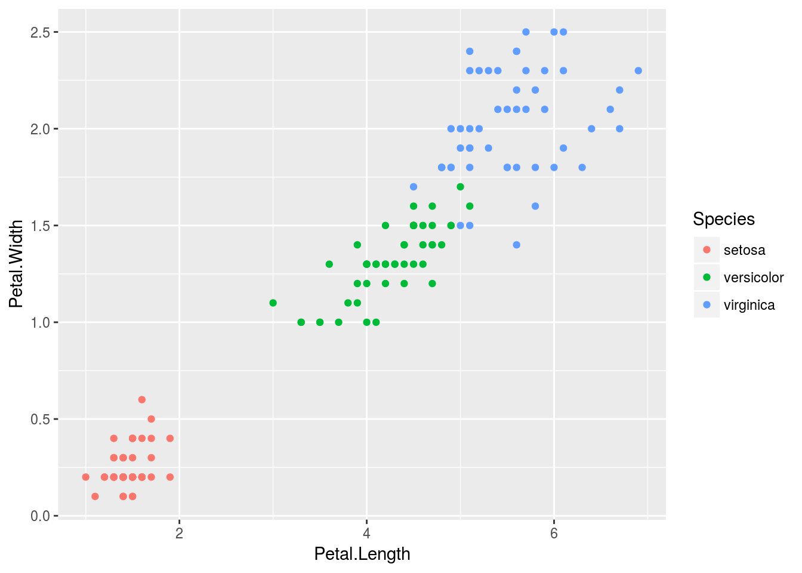
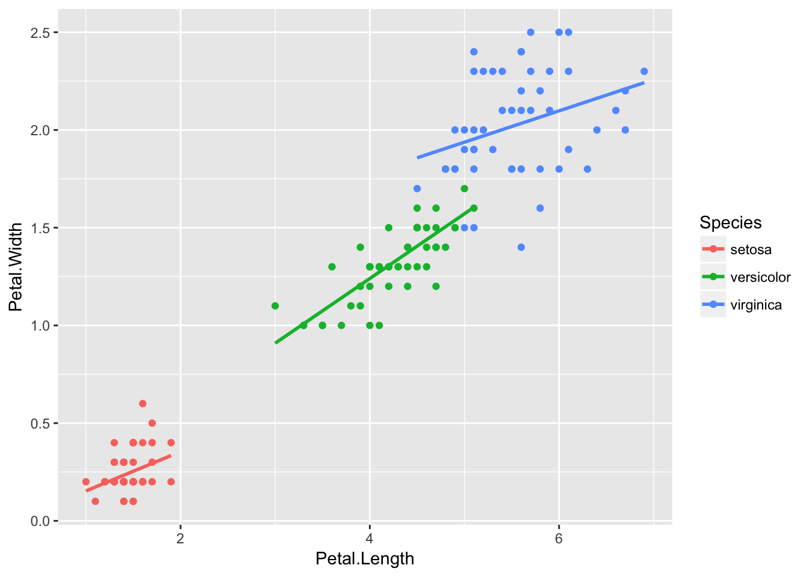
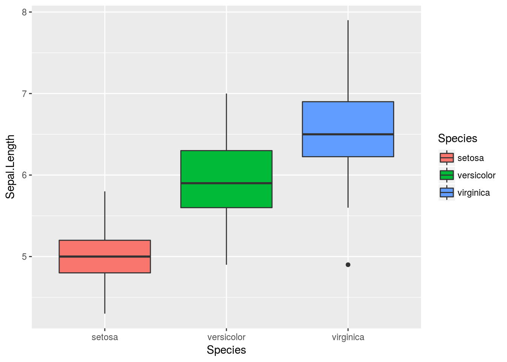
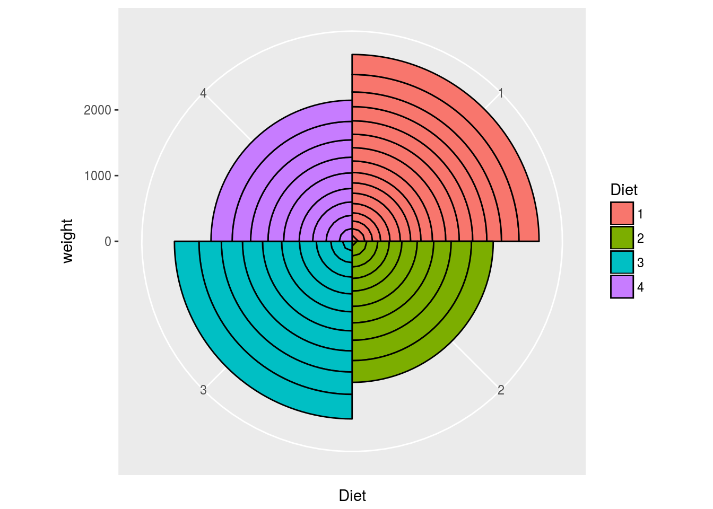

Chapter 4 Graphical data displays
4.1 Frequency distributions
4.1.1 Qualitative data
Qualitative data that describe group representivity to various categories are best described with frequency distribution histograms (I interchangably use histograms, frequency histograms, and frequency distribution histograms). Histograms apply to categorical data. Although it can be presented numerically in tabular form, one more frequently creates a bar or pie graph of the number of occurences in a collection of non-overlapping classes or categories. Both the data and graphical displays will be demonstrated here.
The first case of a frequency distribution histogram is one that shows the raw counts per each of the categories that are represented in the data. The count within each of the categories (represented by a bar graph called a histogram) sums to the sample size, \(n\). In the second case, we may want to report that data as proportions. Here we show the frequency proportion in a collection of non-overlapping categories. For example, we have a sample size of 12 (\(n=12\)). In this sample, two are coloured blue, six red, and five purple. The relative proportions are \(2/12=0.1666667\) blue, \(6/12=0.5\) red, and \(5/12=0.4166667\) purple. The important thing to note here is that the relative proportions sum to 1, i.e. \(0.1666667+0.5+0.4166667=1\). These data may be presented as a table or as a graph.
Let us demonstrate the numerical and graphical summaries using the built-in iris data:
# the numerical summary produced by a piped series of functions
# create a summary of the data (i.e. number of replicates per species)
# used for (A), (B) and (C)
iris.cnt <- iris %>%
count(Species) %>%
mutate(prop = n / sum(n))
iris.cntR> # A tibble: 3 x 3
R> Species n prop
R> <fct> <int> <dbl>
R> 1 setosa 50 0.333
R> 2 versicolor 50 0.333
R> 3 virginica 50 0.333# a stacked bar graph with the cumulative sum of observations
plt1 <- ggplot(data = iris.cnt, aes(x = "", y = n, fill = Species)) +
geom_bar(width = 1, stat = "identity") +
labs(title = "Stacked bar graph", subtitle = "cumulative sum",
x = NULL, y = "Count") +
theme_minimal()
# a stacked bar graph with the relative proportions of observations
plt2 <- ggplot(data = iris.cnt, aes(x = "", y = prop, fill = Species)) +
geom_bar(width = 1, stat = "identity") +
scale_y_continuous(breaks = c(0.00, 0.33, 0.66, 1.00)) +
labs(title = "Stacked bar graph", subtitle = "relative proportions",
x = NULL, y = "Proportion") +
theme_minimal()
# a basic pie chart
plt3 <- plt1 + coord_polar("y", start = 0) +
labs(title = "Friends don't let...", subtitle = "...friends make pie charts",
x = NULL, y = NULL) +
scale_fill_brewer(palette = "Blues") +
theme_minimal()
# if you seriously want a pie chart, rather use the base R function, `pie()`
# here now a bar graph...
# the default mapping of `geom_bar` is `stat = count`, which is a
# bar for each fo the categories (`Species`), with `count` along y
plt4 <- ggplot(data = iris, aes(x = Species, fill = Species)) +
geom_bar() +
labs(title = "Side-by-side bars", subtitle = "n per species", y = "Count") +
theme_minimal()
ggarrange(plt1, plt2, plt3, plt4, nrow = 2, ncol = 2, labels = "AUTO")
4.1.2 Continuous data
4.1.2.1 Frequency distributions (histograms)
As with discrete data, we have a choice of absolute (Fig. 4.1A) and relative (Fig. 4.1 B-C) frequency histograms. There’s also the empirical cumulative distribution function (ECDF) (Fig. 4.1 D), which also uses relative proportions, but in this instance it is the relative propotion that each individual observation has towwards the sample. Since the purpose of frequency histograms is to count the number of times something takes place or occurs within a category, what do we do when we are faced with continuous data where no categories are available? We can create our own categories, called bins. See the Old Faithful data, for example. The eruptions last between 1.6 and 5.1 minutes. So, we create intervals of time spanning these times, and within each count the number of times an event lasts as long as denoted by the intervals. Here we might choose intervals of 1-2 minutes, 2-3 minutes, 3-4 minutes, 4-5 minutes, and 5-6 minutes. The ggplot2 geom_histogram() function automatically creates the bins, but we may specify our own. It is best to explain these principles by example (see Figure X A-B).
# a normal frequency histogram, with count along y
hist1 <- ggplot(data = faithful, aes(x = eruptions)) +
geom_histogram(colour = "black", fill = "salmon", alpha = 0.6) +
labs(title = "Old Faithful data",
subtitle = "A vanilla frequency histogram",
x = "Eruption duration (min)",
y = "Count") + theme_pubr()
# when the binwidth is 1, the density histogram *is* the relative
# frequency histogram
hist2 <- ggplot(data = faithful, aes(x = eruptions)) +
geom_histogram(aes(y = ..density..),
position = 'identity', binwidth = 1,
colour = "black", fill = "salmon", alpha = 0.6) +
labs(title = "Old Faithful data",
subtitle = "Relative frequency histogram",
x = "Eruption duration (min)",
y = "Count") + theme_pubr()
# if binwidth is something other than 1, the relative frequency in
# a histogram is ..density.. * binwidth
hist3 <- ggplot(data = faithful, aes(x = eruptions)) +
geom_histogram(aes(y = 0.5 * ..density..),
position = 'identity', binwidth = 0.5,
colour = "black", fill = "salmon", alpha = 0.6) +
labs(title = "Old Faithful data",
subtitle = "Relative frequency histogram",
x = "Eruption duration (min)",
y = "Relative contribution") + theme_pubr()
# ECDF
hist4 <- ggplot(data = faithful, aes(x = eruptions)) +
stat_ecdf() +
labs(title = "Old Faithful data",
subtitle = "ECDF",
x = "Eruption duration (min)",
y = "Relative contribution") + theme_pubr()
ggarrange(hist1, hist2, hist3, hist4, ncol = 2, nrow = 2, labels = "AUTO")Figure 4.1: Examples of histograms for the Old Faithful data. A) A default frequency histogram showing the count of eruption times falling within the specified bins. B) A relative frequency histogram with bins adjusted to a width of 1 minute intervals; here, the sum of counts within each of the four bins is 1. C) Another relative frequency histogram, but with the bins adjusted to each be 0.5 minute increments; again the sum of counts represented by each bin is equal to 1.
4.1.2.2 Cumulative frequency distributions
4.1.2.3 Cumulative relative frequency distributions
4.1.2.4 Scatter plots
Relationship between two (matched) continuous variables.

ggplot(data = iris, aes(x = Petal.Length, y = Petal.Width, colour = Species)) +
geom_point() +
geom_smooth(method = "lm", se = F)
4.1.2.5 Box plots
Box plots are sometimes called box-and-whisker plots. These graphs are a a graphical representation of the data based on its quartiles as well as its smallest and largest values. The keen eye can glance the ‘shape’ of the data distribution.

4.2 Bar graphs
4.3 Pie graphs (!!!)
ggplot(data = arrange(filter(ChickWeight, Time == 21), weight), aes(x = Diet, y = weight, fill = Diet)) +
geom_col(colour = "black", width = 1) +
coord_polar()